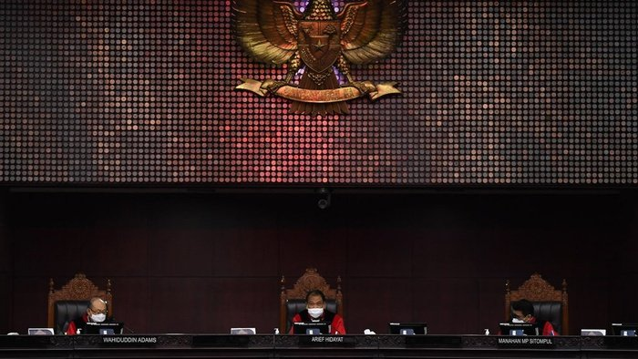

'Hadiah' Bintang Jasa Jokowi Mengguncang Independensi Hakim MK?
Presiden Joko Widodo memberikan penghargaan kepada enam dari sembilan hakim konstitusi dalam acara yang diselenggarakan di Istana Negara Jakarta, 11 November lalu. Arief Hidayat, Anwar Usman, dan Aswanto menerima Bintang Mahaputera Adipradana; sementara Wahiduddin Adams, Suhartoyo, dan Manahan MP Sitompul menerima Bintang Mahaputera Utama.
Menurut pakar hukum dari Universitas Trisakti Abdul Ficar Hadjar, penghargaan tersebut tidak etis meski memiliki dasar yuridis. Dikatakan demikian karena pemerintah telah, sedang, dan akan berperkara di MK menyusul berbagai regulasi digugat masyarakat, dari mulai UU KPK, UU Minerba, Perpu Corona--yang sudah menjadi UU, UU MK, dan UU Cipta Kerja. Memberikan penghargaan dalam konteks tersebut dapat menimbulkan pandangan negatif dari masyarakat.
“Pemberian penghargaan itu telah melahirkan konflik kepentingan baik Presiden maupun para hakim,” ujar Ficar kepada reporter Tirto, Senin (16/11/2020). Ficar menyatakan penghargaan semestinya diberikan kepada yang sudah tidak menjabat. Toh mereka saat ini masih “menikmati fasilitas negara dan sudah menerima gaji yang dibayarkan dari uang rakyat.” Penghargaan semestinya untuk mereka yang jasanya melebihi kewajiban dan terbukti memberikan kebaikan bagi masyarakat.